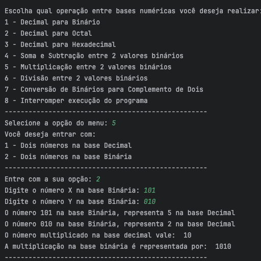

Sobre Mim
- Olá meu nome é Gustavo Lopes Nomelini, moro em Cascavel-Paraná, Brasil.
- Atualmente trabalhando como suporte backoffice e analista de sistemas júnior na empresa Stein Telecomunicações.
- Estudante de Engenharia de Software pela UNINTER.
- Apaixonado por tecnologias no geral e criar sistemas eficientes, robustos e escaláveis.
- Amo aprender novas tecnologias e continuar aprimorando minhas habilidades de Desenvolvimento.
Formação Acadêmica
Engenharia de Software | UNINTER
- Bacharelado em Engenharia de Software
- JAN/2022 - DEZ/2025
Habilidades e Competências
- Algoritmos, Lógica de Programação e Estrutura de Dados.
- Programação Orientada a Objetos.
- SQL e utilização de Sistemas Gerenciadores de Bancos de Dados.
- Backend em JAVA utilizando o Framework SPRING.
- Conceitos de Engenharia de Software como Engenharia de Requisitos, Metodologias Ágeis e Código Limpo.
- Ingles Avançado com certificado de Cambridge level B2 first.
Histórico Profissional
Analista Java Júnior
- AGO/2024 - ATUALMENTE
- Empresa: Stein Telecom.
- Desenvolvimento Backend em Java usando o framework Spring para integrar a API Ubiquiti Unifi e controlar dispositivos Wi-Fi de última geração através do sistema legado da empresa.
Auxílio no suporte técnico, oferecendo suporte aos técnicos de campo a partir do back office.
Assistente Administrativo
- MAR/2020 - JUL/2024
- Empresa: Lopes & Nomelini.
- Organização de documentos, suporte na gestão de agendas, atendimento ao cliente, organização de reuniões.
Atividades administrativas voltadas para garantir a eficiência das operações internas e externas da empresa.
Portfólio
Python Binary Calculator
Entre em Contato
Sinta-se a vontade para entrar em contato comigo via Linkedin, Github ou E-mail.
Estou aberto para vagas de trabalho e trabalhos Freelance !
 LinkedIn
LinkedIn
 GitHub
GitHub
Envie um E-mail clicando no endereço abaixo ou utilizando o formulário:
gustavolnomelini@gmail.comOBS: Formulário ainda não implementado ! (backend)